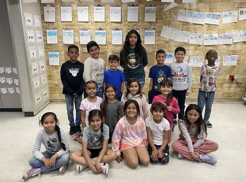
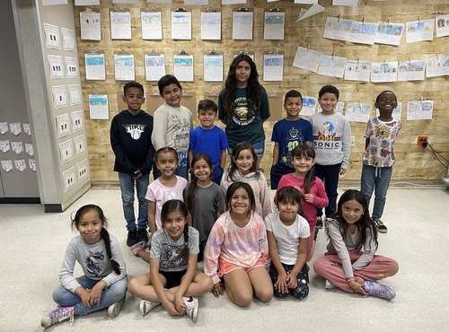
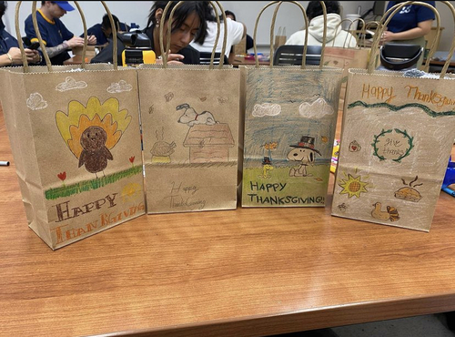
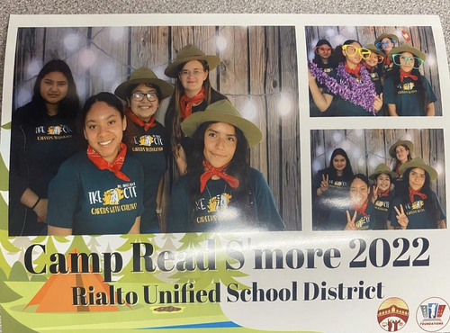
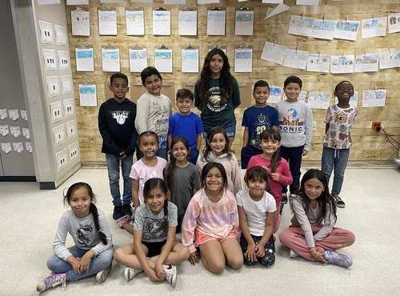
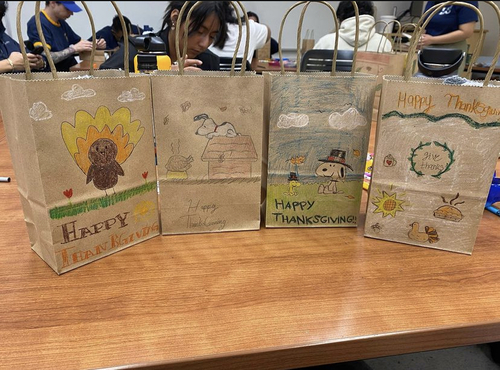
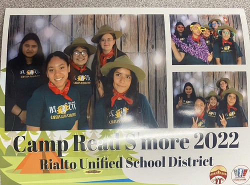

Crystal Solano
Future Teacher
I work really well with childeren and my goal is to become an elementry teacher in the futre. I want to be such joy to my future students and teach them the best way I can.
Community Service
During my senior year in high school, I took a college path way called Career in Education. I got the chance to get on hands experince with first graders and also create my own lesson with them which was so fun. It was an amazing experince working with the first grade teacher as well and also working with a few students on thier grammer and numbers. I also have helped out in my community by helping clean up trash in my areas as well cleaning up my high school and helping out at events they had.
Baby Siting
I babysat a couple of kids around when I was 17 year old and would babysit kids who were in my apartment complex. It was a little chanlleging at frist but I got the hang of it.
Experience
Yard Work
• Responsible for mowing the lawn along with other yard work requested by the home owners
Community Service
• Helped out in a event for The Rialto District
• Handled money in for a footbal event on campus during high school
• Cleaned trash for my community and high school campus
• For thanksgiving passed out goodie treats for the homless
Education
UNIVERSITY OF CALIFORNIA RIVERSIDE
EISENHOWER HIGH SCHOOL
Portfolio
 



 